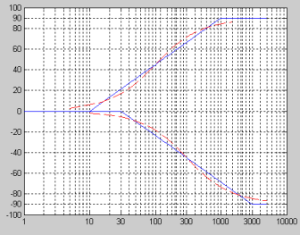
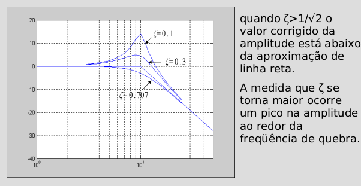

Diagrama de Bode#
Resposta de sistemas LIT#
Introdução#
Considerando sistemas cuja entrada e saída estejam relacionadas com uma EDO linear tem-se:
Onde: N(s) é um polinômio de grau M e D(s) é um polinômio de grau N.
Resposta de sistemas LIT#
Introdução#
Reescrevendo a equação anterior:
Onde:
\(z_i\) são os zeros da função de transferência e \(p_i\) são os polos da função de transferência;
\(a_i = s - z_i\) e \( b_i = s - p_i\)
Resposta de sistemas LIT#
Exemplo: Calcular a resposta de frequência para o sistema \(H(s)\).#
\( H(s)=\frac{s+1}{(s+1-5j)(s+1+5j)}\) fazendo \(s \to j\omega \)#
\begin{align} H(j\omega) & = & \frac{j\omega+1}{(j\omega+1-5j)(j\omega+1+5j)}\ & = & \frac{1+j\omega}{(1+j\omega)^2+5^2}\ & = & \frac{1+j\omega}{26-\omega²+2j\omega} \end{align}
Neste caso se determina \(|H(j\omega)|\) e fase \(\angle H(j\omega)\) para alguns valores de \(\omega\).#
Fazendo as contas para \(|H(j\omega)|\) e \(\angle H(j\omega)\):
Diagrama de Bode#
Gráficos de Magnitude e Fase#
O diagrama de Bode é uma técnica gráfica que fornece uma aproximação da resposta de H(s).
Consiste de dois diagramas separados:
\(|H(j\omega)|\) x \(\omega\) (módulo)
\(\angle H(j\omega)\) x \(\omega\) (fase)
Os desenhos são feitos em gráficos log-log
Diagrama de Bode#
Diagrama de Módulo#
Calculando o módulo
No exemplo anterior:
Onde \(|H(j\omega)|\) é o módulo da diferença do vetor \(j\omega\) ao vetor -1.
Diagrama de Bode#
Diagrama de Módulo: Interpretação#
Diagrama de Bode#
Diagrama de Módulo: interpretação#
A determinação do módulo de \(H(j\omega)\) é dado pelo:
produto das distâncias de \(j\omega\) aos zeros;
dividido pelo produto das distâncias de \(j\omega\) aos polos
Considerando o \(|H(s)|\) em dB os produtos passam para somas.
Diagrama de Bode#
Diagrama de Módulo: Reescrevendo a equação#
Diagrama de Bode#
Diagrama de Módulo#
Passando o módulo para logaritmo
Analisando apenas uma parcela:
Alguns pontos especiais:#
\(\omega = \omega_p/2\)
\(\omega = \omega_p \)
\(\omega = \omega_p 2\)
import numpy as np
20*np.log10(np.sqrt(2))
3.010299956639812
Diagrama de Bode#
Diagrama de Módulo#
Analisando as equações
Em um gráfico log x log e a direita de \(\omega_p\), essa contribuição será linear
Diagrama de Bode#
Diagrama de Bode#
from scipy import signal
import numpy as np
import matplotlib.pyplot as plt
def assintota(W, q, tipo):
resp = []
for freq in W:
if freq < q:
resp.append(0)
else :
if tipo == 'polo':
resp.append(-20*np.log10(freq) + 20*np.log10(q))
else :
resp.append( 20*np.log10(freq) - 20*np.log10(q))
return resp
def soma(l1, l2):
L = []
for i in range(len(l1)):
L.append(l1[i]+l2[i])
return L
Num = [1] # 1
Den = [1, 101, 100] # S^2 + 101s + 100
print('Numerador: ', Num)
print('Denominador: ', Den)
zeros = np.roots(Num)
polos = np.roots(Den)
print('Zeros: ', zeros)
print('Polos: ', polos)
zeros = [abs(zero) for zero in zeros]
zeros.sort()
polos = [abs(polo) for polo in polos]
polos.sort()
k=1
for zero in zeros:
k = k*zero
for polo in polos:
k = k/polo
KdB = 20*np.log10(abs(k))
print('KdB = ', KdB)
#
sys = signal.TransferFunction(Num, Den) # 1/(s+1) 10/(s+1)(s+10)
w, mag, phase = signal.bode(sys)
plt.figure()
plt.semilogx(w, mag-KdB, linewidth= 2) # Bode magnitude plot
for polo in polos:
plt.scatter(polo, 0, marker="x", s = 80, color = 'red')
for zero in zeros:
plt.scatter(zero, 0, s=80, facecolors='none', edgecolors='k')
#assintote0 = assintota(w, zeros[0], 'zero')
assintote1 = assintota(w, polos[0],'polo')
#plt.semilogx(w, assintote)
assintote2 = assintota(w, polos[1], 'polo')
assin = soma(assintote1, assintote2)
#assin = soma(assin, assintote0)
plt.semilogx(w, assin)
#plt.semilogx(w, assintote0, color='purple', alpha=0.3)
plt.semilogx(w, assintote1, color='purple', alpha=0.3)
plt.semilogx(w, assintote2, color='purple', alpha=0.3)
plt.xlabel('frequency')
plt.ylabel(r'$|H(j\omega)|_{dB}$')
#plt.ylim((-21,21))
plt.grid()
plt.figure()
plt.semilogx(w, phase) # Bode phase plot
#plt.ylim((-90, 10))
plt.xlabel('frequency')
plt.ylabel(r'$\angle |H(j\omega)|$')
plt.grid()
plt.show()
Numerador: [1]
Denominador: [1, 101, 100]
Zeros: []
Polos: [-100. -1.]
KdB = -40.0
from scipy import signal
import numpy as np
import matplotlib.pyplot as plt
def assintota(W, q, tipo):
resp = []
for freq in W:
if freq < q:
resp.append(0)
else :
if tipo == 'polo':
resp.append(-20*np.log10(freq) + 20*np.log10(q))
else :
resp.append( 20*np.log10(freq) - 20*np.log10(q))
return resp
def soma(l1, l2):
L = []
for i in range(len(l1)):
L.append(l1[i]+l2[i])
return L
Num = [1, 1] # 1
Den = [1, 110, 1000] # S^2 + 101s + 100
print('Numerador: ', Num)
print('Denominador: ', Den)
zeros = np.roots(Num)
polos = np.roots(Den)
print('Zeros: ', zeros)
print('Polos: ', polos)
zeros = [abs(zero) for zero in zeros]
zeros.sort()
polos = [abs(polo) for polo in polos]
polos.sort()
k=1
for zero in zeros:
k = k*zero
for polo in polos:
k = k/polo
KdB = 20*np.log10(abs(k))
print('KdB = ', KdB)
sys = signal.TransferFunction(Num, Den) # 1/(s+1) 10/(s+1)(s+10)
w, mag, phase = signal.bode(sys)
plt.figure()
plt.semilogx(w, mag-KdB, linewidth= 2) # Bode magnitude plot
for polo in polos:
plt.scatter(polo, 0, marker="x", s = 80, color = 'red')
for zero in zeros:
plt.scatter(zero, 0, s=80, facecolors='none', edgecolors='k')
assintote0 = assintota(w, zeros[0], 'zero')
assintote1 = assintota(w, polos[0],'polo')
plt.semilogx(w, assintote0)
assintote2 = assintota(w, polos[1], 'polo')
assin = soma(assintote1, assintote2)
assin = soma(assin, assintote0)
plt.semilogx(w, assin)
plt.semilogx(w, assintote0, color='purple', alpha=0.3)
plt.semilogx(w, assintote1, color='purple', alpha=0.3)
plt.semilogx(w, assintote2, color='purple', alpha=0.3)
plt.xlabel('frequency')
plt.ylabel(r'$|H(j\omega)|_{dB}$')
#plt.ylim((-21,21))
plt.grid()
plt.figure()
plt.semilogx(w, phase) # Bode phase plot
#plt.ylim((-90, 10))
plt.xlabel('frequency')
plt.ylabel(r'$\angle |H(j\omega)|$')
plt.grid()
plt.show()
Numerador: [1, 1]
Denominador: [1, 110, 1000]
Zeros: [-1.]
Polos: [-100. -10.]
KdB = -60.0
Diagramas mais precisos#
Os gráficos com linhas retas podem ser feitos de forma mais precisa realizando a correção dos valores de amplitude perto das frequências dos polos e zeros.
A partir da metade da frequência dos polos (ou zeros) e no dobro da sua frequência os valores reais em dB são:
Nessas equações os sinais + corresponde aos zeros de primeira ordem e o sinal - para o polo de primeira ordem
Diagramas mais precisos#
Diagramas para o ângulo#
O ângulo da fase para a constante K é zero.
O ângulo da fase para um polo ou zero de primeira ordem na origem é constante igual a \(\pm 90º\).
Para polos ou zeros fora da origem:
Para freqüências menores que 1/10\(\omega_q\) o ângulo de fase é considerado zero.
Para freqüências menores que 10\(\omega_q\) o ângulo de fase é considerado \(\pm 90º\).
Entre essas frequências o diagrama é uma linha reta que vai de 0º a \(\pm 90º\) com inclinação de \(\pm 45º\)/década.
Diagramas para o ângulo#

Diagramas para o ângulo#
Exemplo#
\(\Theta(\omega)=\Psi_1-\beta_1-\beta_2\)
\(\Psi_1=90º\)
\(\beta_1=tan^{-1}(\omega/10)\)
\(\beta_2 = tan^{-1}(\omega/100)\)
Exemplo#
Polos e Zeros complexos#
Qual a interpreteção para \(\omega_n\) e \(\zeta\)?
Comportamento dos polos e zeros complexos#
Diagrmas de amplitude#
\(u=\frac{\omega}{\omega_n}\), \(u\rightarrow 0\) se \(\omega\rightarrow 0\) e \(u\rightarrow \infty\) se \(\omega\rightarrow \infty\)
se \(u\rightarrow 0\), \(-10log_{10}[u⁴+2u²(2\zeta²-1)+1]\rightarrow 0\)
se \(u\rightarrow \infty\), \(-10log_{10}[u⁴+2u²(2\zeta²-1)+1]\rightarrow -40log_{10}u\)
O diagrama de amplitude consiste de duas retas.
Para \(\omega<\omega_n\), a linha reta está sobre o eixo-x em 0 dB. Para \(\omega>\omega_n\), a linha reta possui inclinação de -40 dB/década.
Essas duas linhas se encontram em \(\omega=\omega_n\).
